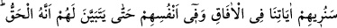

Müminin esas rahat edeceği yer, âhirettir. Kâfir ise zaten hem dünyada, hem de
âhirette hep ziyandadır. Artık kul dosdoğru yol üzere yürümeli, ayağının kaymasına,
nimet yahut musîbet olarak karşısına çıkacak olan hîle ve tuzaklara karşı dikkatli
olmalıdır.
Hafız şöyle demiştir:
Hîlebâz feleğin ayak kaydırdığı yerde benim işim ne,
Hîlebâz feleğin bahânelerinden kurtulmanın yolu ne?
53. İnsanlara ufuklarda ve kendi nefislerinde âyetlerimizi göstereceğiz ki onun
(Kur’an’ın) gerçek olduğu, onlara iyice belli olsun. Rabbinin her şeye şâhid olması,
yetmez mi?
“Biz onlara”, Kureyş kâfirlerine “ufuklarda” Mekke ve Hicaz dışında diğer
ülkelerde yahut dış dünyada “ve kendi canlarında” Mekke halkı arasında, Kur’ân’ın
Allah tarafından gönderilen hak bir kitap olduğuna dâir “âyetlerimizi göstereceğiz ki
onun” Kur’ân’ın “gerçek olduğu” yahut peygamberin gerçek olduğu “onlara iyice
belli olsun. Rabbinin her şeye şâhid olması yetmez mi?”
“Âfâk”, “ufuk” kelimesinin çoğuludur. Ufuk ise “yerin etrafı” demektir. “Göğün âfâkı”
da aynı şekilde “göğün etrafı” demektir. Âfâk senin dışında ferşten (yerden) Arş’a kadar
olan büyük âlemdir. Enfüs ise insanın muhtevâsı olup küçük âlemdir. Her insan başlı
başına bir âlemdir. Burada âfâkî âyetlerden murad, Peygamberimiz (s.a.)’in, geleceğe
dâir haber vermiş olduğu birtakım hâdiselerdir. Bizanslı Rumların Pers imparatorluğu
ile birkaç yıl içinde yapacağı savaşta galip gelmesi, tarihçiler nezdinde mevcûd kayıt
ve bilgilere muvâfık olarak geçmişte yaşanan vakâların haber verilmesi, bu
cümledendir.
Halbuki Peygamberimiz (s.a.) ümmî olup okuma yazma bilmezdi. Bu konularla ilgili
olarak hiç kimseyle bir mübâhasesi yoktur. Hârikulâde ve cidden çok enteresan şekilde
Allah Teâlâ peygamberine ve onun halîfelerine fetihler ve galibiyetler ihsan ederek
doğuda, batıda, dünyanın dört bir bucağında bir benzerinin daha önce hiç kimseye nasip
olmadığı zafer ve hükümranlık nasip etmiştir.
“Kendi canlarında”, bu durum Mekke halkı arasında yaşanan kıtlık, korku ve Bedir
günü ve Mekke’nin fethinde yaşanan can pazarı ve yenilgileridir. Mekke,
Peygamberimiz (s.a.) den önce hiçbir kimse tarafından feth edilmemiş ve yine Mekke
halkı daha önce böyle bir can pazarı ve esâret görmemiştir.
“Ufuklardaki âyetlerin” mâhiyeti hakkında şöyle bir nakil yapılmaktadır: Bu âyetler,
gökler ve yerin etrafında deveran eden güneş, ay, yıldızlar ve bunların hareket ve